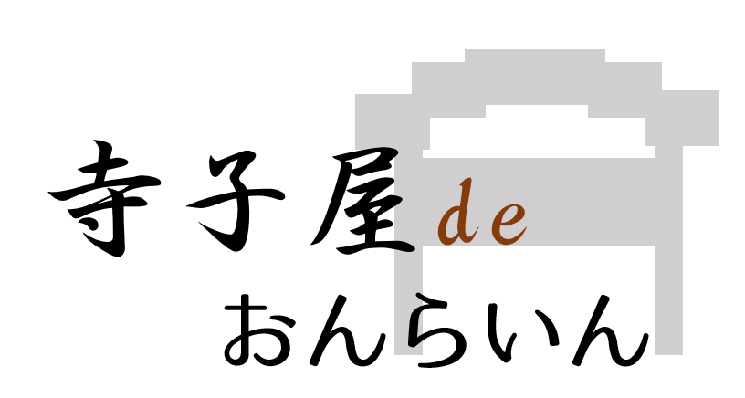

お子さんをお預かりする際に入退出管理システムを設けております。 入退出管理システムでは、お子さんが寺子屋に入退出した際に保護者様へメールを送信するシステムとなっております。 詳しくは以下の入退出システムに登録する、からご覧ください。

9/12(Sun)Webページを公開しました
9/12(Sun)ボランティアで寺子屋の先生を募集しております。
9/13(Mon)説明会を行います
TEL ***-****-****
e-Mail nara-k@hogehoge.com
活動日 毎週水曜日
活動時間 14:00〜18:00
右上のボタンを押していただくと各場所をお調べいただけます．